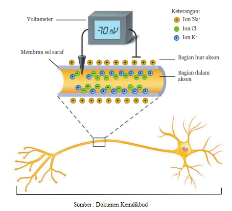

• Siswa dapat menjelaskan prinsip kerja kapasitor.
Tubuh kita dapat menunjukkan adanya gejala kelistrikan, khususnya pada saraf yang disebabkan adanya impuls (sinyal pada sel saraf). kita dapat merasakan sakit ketika dicubit, karena rasa sakit tersebut muncul karena kulit kita menerima rangsangan berupa cubitan. Rangsangan ini selanjutnya diubah oleh sel saraf dalam kulit menjadi impuls. Kajian yang khusus mempelajari tentang aliran impuls pada tubuh manusia disebut biolistrik. Kelistrikan pada tubuh hanya berkaitan dengan komposisi ion yang terdapat dalam tubuh, bukan listrik yang mengalir seperti pada kabel listrik di rumah-rumah.
Gambar 6 Ilustrasi Muatan Listrik pada Sel Saraf
Sel saraf menghantarkan impuls karena terjadi pertukaran ion-ion di dalam dan di luar membran sel saraf. Pertukaran ion tersebut tidak dapat terjadi begitu saja tanpa adanya rangsangan. Rangsangan yang cukup kuat dapat mengaktifkan pompa ion, sehingga menyebabkan terjadinya pertukaran ion. Saat sel saraf tidak menghantarkan impuls, muatan positif Na+ melingkupi bagian luar membran sel. Pada kondisi demikian, membran sel saraf bagian luar bermuatan listrik positif dan membran sel bagian dalam bermuatan listrik negatif (Cl-). Perhatikan Gambar berikut.
Gambar 7 Impuls Listrik pada Saraf Manusia